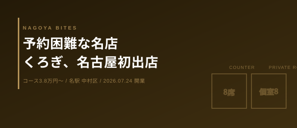

今日の1軒
予約困難な名店くろぎ、名古屋初出店の使い方
東京・芝大門で「日本一予約困難」とも呼ばれる日本料理店『くろぎ』が、2026年7月24日、名古屋初出店「尾張山荘 くろぎ」を開業した。中村区名駅、名鉄名古屋本店エリアの地下。カウンター8席と個室8部屋（2〜10名）、計44席。コースのみで夜は3.8万円〜。開業からまだ3日というこのタイミングで、価格帯・席構成・接待での使い方を業界人目線で読む。

ミシュラン掲載店を含め約60店舗を運営する株式会社グラナダが、シェフ黒木純氏とのタッグで展開する『くろぎ』ブランド。その本店（東京・芝大門）は連日満席で「日本一予約困難」とまで呼ばれる存在だ。その名古屋初出店が、7月24日、中村区名駅——名鉄名古屋本店に程近い地下フロアに開いた。業界人としてまず見るべきは、東京の看板がなぜ今このタイミングで名古屋に来たか、ではなく、開業3日というこの瞬間、席と価格の設計がどう読めるかだ。
価格帯の読み方
夜はコースのみで38,000円〜、食べログの登録予算は40,000円〜50,000円未満。アラカルトの選択肢がないという設計そのものが、原価変動の大きい高級食材（旬の海の幸・山の幸）を「コースの中でならす」ための仕組みだと読める。単品積み上げ型の店より会計の予測が立てやすい一方、値引きの余地はない。接待で使うなら、相手の予算感を先に共有しておくのが業界人の作法だ。
席構成という裏側
44席のうち半分の8部屋が個室（2〜10名）という配分は、カウンター割烹というより「会食装置」に近い設計だ。開業直後は予約の絶対数がまだ読めていない店側も手探りの時期で、逆にこの数日〜数週間は席の融通が利きやすいタイミングでもある。予約は食べログ経由。シェフの由水正信氏は本店で修業後、上海店のエグゼクティブシェフを務めた経歴を持ち、黒真珠レストランガイドでも高評価を得ている。
どのシーンに向くか
個室主体・コース固定・単価4万円という設計は、接待や会食に最も向く。友人との一人飲みや気軽なデートには不向きだが、「名古屋にこの店があること」自体が接待相手への説明として成立する数少ない業態だ。開業からまだ日が浅い今は、東京の本店ほど予約が読めない過渡期でもある。会食の予定が近いなら、まさに今が動くタイミングだろう。
Inside Perspective — 業界人の目利き
- コースのみ3.8万円〜という価格帯は、原価変動の大きい高級食材をコース内でならす設計。値引きの余地がないぶん、接待では相手の予算感を先に共有しておくのが作法
- 44席中8部屋が個室というのは会食装置に近い設計。開業直後の今は予約の絶対数がまだ読めておらず、逆に席の融通が利きやすい過渡期
- 個室主体・コース固定・単価4万円は接待・会食向き。一人飲みや気軽なデートには不向き。「名古屋にこの店がある」こと自体が接待の説明になる希少な業態